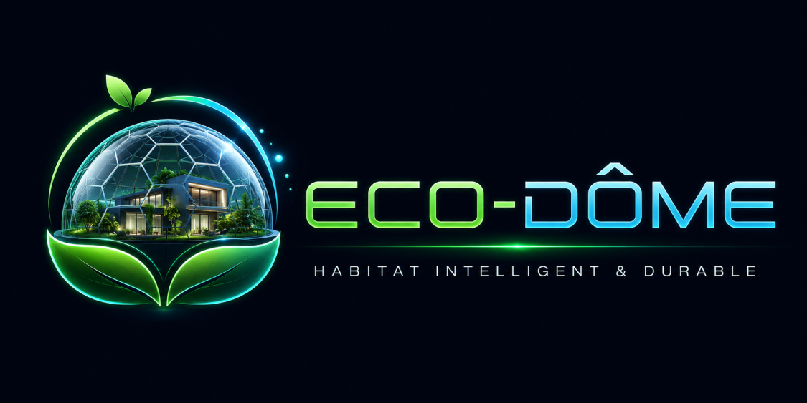

Réchauffer, refroidir, respirer — une serre intelligente pour un confort durable
L’habitat moderne repose majoritairement sur des systèmes de chauffage et de climatisation très énergivores.
Ils dépendent fortement des énergies fossiles et ignorent souvent les conditions naturelles du climat.
Cela entraîne une consommation excessive d’énergie, des coûts élevés et une dégradation du confort de vie.
La qualité de l’air intérieur est également impactée, ce qui peut avoir des conséquences sur la santé.
ECO-DOME est une serre intelligente qui enveloppe l’habitat afin de créer une zone climatique intermédiaire.
Elle permet de capter, stocker et redistribuer naturellement l’énergie solaire.
Le logement devient plus autonome, mieux isolé et beaucoup moins dépendant des systèmes énergétiques traditionnels.
Des capteurs analysent en temps réel la température, l’humidité et la lumière.
Le système ajuste automatiquement la ventilation et le stockage thermique.
Cette gestion intelligente permet d’optimiser le confort tout en réduisant la consommation énergétique.
ECO-DOME utilise des matériaux durables et des technologies propres pour réduire son impact environnemental global. L’objectif est de construire un habitat respectueux des ressources naturelles.
La structure utilise du verre recyclé haute performance pour limiter les déchets et optimiser la lumière naturelle.
Ils produisent une énergie renouvelable qui alimente une partie du logement et des systèmes intelligents.
L’eau de pluie est filtrée et réutilisée pour l’arrosage et la régulation thermique naturelle.
ECO-DOME fonctionne comme un écosystème autonome.
Le jour, il capte l’énergie solaire et stocke la chaleur.
La nuit, cette chaleur est progressivement restituée.
En été, la ventilation naturelle et l’évaporation de l’eau permettent de rafraîchir l’air.
Les plantes jouent aussi un rôle essentiel dans la purification et l’équilibre climatique.